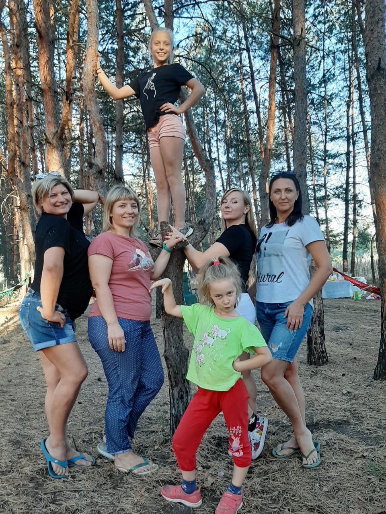

Пару слов обо мне. Привет, я Царева Елена. Да, я люблю розы и весело проводить время со своей семьей и друзьями. Люблю шумные компании и активно занимаюсь спортом. Мне очень нравится лыжный спорт. Стараемся каждую зиму выехать на какой-нибудь склон и покататься в волю. Преимущественно отдыхаем в Карпатах.
Но если позволит погода и стабильная, здоровая эпидемиологическая ситуация в мире, этой зимой хотим покорить спящий вулкан Эрджияс в Турции. Если интересно, посмотреть можно здесь: Эрджияс зимой

И полюбоваться замечательными видами знаменитой Каппадокии. Больше интересной информации здесь: Удивительная Каппадокия

Еще о моих увлечениях.
Очень люблю заниматься фитнесом. Поэтому являюсь постоянным завсегдатаем Центра фитнеса и танцев Iceberg, спортивного клуба "Олимп". Увлекательные и интересные, а главное полезные занятия для поднятия тонуса и настроения! Занятия проходят в разных стилях и с разными интенсивными нагрузками. О фитнесе все узнаете здесь: Сайт Айсберг
Вот примерно чем мы занимаемся на тренировках:
Больше видео можно посмотреть здесь: Видео Айсберг
Что дают нам эти тренировки:
Вспомните, как люди выживали в 1941 году!". Вот это настоящий оптимизм!)))
Замечательно проводим время с друзьями. Выезжаем на природу. Объездили уже все окрестные леса. Вместе отдыхаем на морях и базах отдыха. Приятно проводим время в "увеселительных заведениях".)))

Либо просто проводим вместе домашние вечера, с интересными играми, такими как:
Очень люблю музыку. Фаворитная певица Ани Лорак. Вот один из ее лучших клипов:
У этой певицы много "сильных", хитовых песен. Таких как:
Одним словом, наполняем себя яркими красками и событиями. Меняем жизнь к лучшему. Слушаем музыку, вдохновляемся и красим...